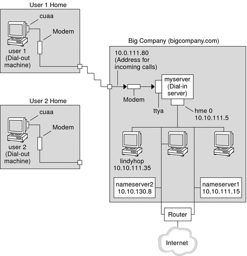

|
|||||||||||||||||||
|
Part I Network Services Topics Part II Accessing Network File Systems Topics 4. Managing Network File Systems (Overview) 5. Network File System Administration (Tasks) 6. Accessing Network File Systems (Reference) 8. Planning and Enabling SLP (Tasks) 10. Incorporating Legacy Services Part V Serial Networking Topics 15. Solaris PPP 4.0 (Overview) 16. Planning for the PPP Link (Tasks) Overall PPP Planning (Task Map) Planning for Authentication on a Link Planning for DSL Support Over a PPPoE Tunnel 17. Setting Up a Dial-up PPP Link (Tasks) 18. Setting Up a Leased-Line PPP Link (Tasks) 19. Setting Up PPP Authentication (Tasks) 20. Setting Up a PPPoE Tunnel (Tasks) 21. Fixing Common PPP Problems (Tasks) 22. Solaris PPP 4.0 (Reference) 23. Migrating From Asynchronous Solaris PPP to Solaris PPP 4.0 (Tasks) 25. Administering UUCP (Tasks) Part VI Working With Remote Systems Topics 27. Working With Remote Systems (Overview) 28. Administering the FTP Server (Tasks) 29. Accessing Remote Systems (Tasks) Part VII Monitoring Network Services Topics |
Planning a Dial-up PPP LinkDial-up links are the most commonly used PPP links. This section includes the following information:
Typically, you only configure the machine at one end of the dial-up PPP link, the dial-out machine, or the dial-in server. For an introduction to dial-up PPP, refer to Dial-up PPP Overview. Before You Set Up the Dial-out MachineBefore you configure a dial-out machine, gather the information that is listed in the following table. Note - The planning information in this section does not include information to be gathered about authentication or PPPoE. For details about authentication planning, refer to Planning for Authentication on a Link. For PPPoE planning, refer to Planning for DSL Support Over a PPPoE Tunnel. Table 16-2 Information for a Dial-out Machine
Before You Set Up the Dial-in ServerBefore you configure a dial-in server, gather the information that is listed in the following table. Note - The planning information in this section does not include information to be gathered about authentication or PPPoE. For details about authentication planning, refer to Planning for Authentication on a Link. For PPPoE planning, refer to Planning for DSL Support Over a PPPoE Tunnel. Table 16-3 Information for a Dial-in Server
Example of a Configuration for Dial-up PPPThe tasks to be introduced in Chapter 17, Setting Up a Dial-up PPP Link (Tasks) execute a small company's requirement to let employees work at home a few days a week. Some employees require the Solaris OS on their home machines. These workers also need to log in remotely to their work machines on the corporate Intranet. The tasks set up a basic dial-up link with the following features:
The next figure shows the link that is set up in Chapter 17, Setting Up a Dial-up PPP Link (Tasks). Figure 16-1 Sample Dial-up LinkIn this figure, a remote host dials out through its modem over telephone lines to Big Company's Intranet. Another host is configured to dial out to Big Company but currently is inactive. The calls from remote users are answered in the order received by the modem that is attached to the dial-in server at Big Company. A PPP connection is established between the peers. The dial-out machine can then remotely log in to a host machine on the Intranet. Where to Go for More Information About Dial-up PPPRefer to the following:
|
||||||||||||||||||
|